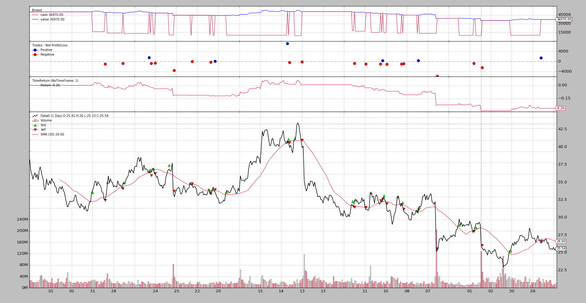
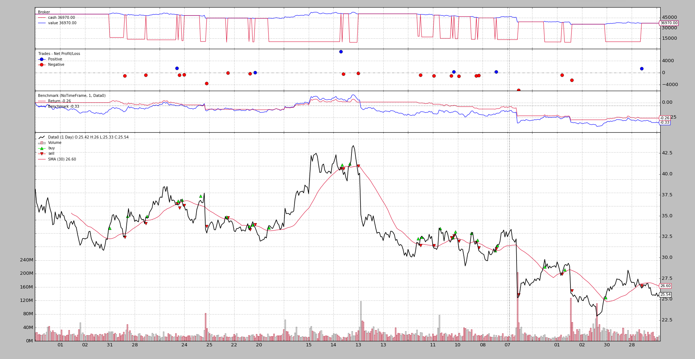
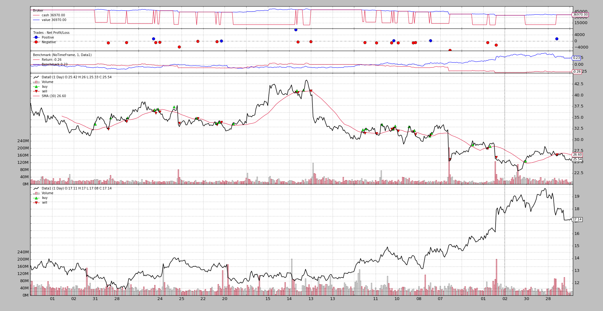

Benchmarking¶
Ticket #89 is about adding benchmarking aginst an asset. Sensible as one may actually have a strategy that even if positive is below what simply tracking the asset would have delivered.
backtrader includes 2 different types of objects which can aid with tracking:
- Observers
- Analyzers
In the realm of Analyzers there was already a TimeReturn object which
tracks the evolution of the returns of the entire portfolio value (i.e:
including cash)
This could have also obviously been an Observer, so whilst adding some benchmarking some work has also gone into being able to plug together an Observer and an Analyzer which are meant to track the same thing.
Note
The major difference between Observers and Analyzers is the lines nature of observers, which is recording every value and makes them suitable for plotting and always for real time querying. This of course consumes memory.
Analyzers on the other hand return a set of results via
get_analysis and the implementation may not deliver any result
until the very end of a run.
Analyzers - Benchmarking¶
The standard TimeReturn analyzer has been extended to support tracking a
data feed. The 2 major parameters invoved:
timeframe(default:None) IfNonethen the complete return over the entire backtested period will be reportedPass
TimeFrame.NoTimeFrameto consider the entire dataset with no time constraints
data(default:None)Reference asset to track instead of the portfolio value.
Note
this data must have been added to a
cerebroinstance withaddata,resampledataorreplaydata
(For more details and parameters go to the reference in the docs)
As such, the returns of the porftolio on a yearly basis can be tracked like this:
import backtrader as bt
cerebro = bt.Cerebro()
cerebro.addanalyzer(bt.analyzers.TimeReturn, timeframe=bt.TimeFrame.Years)
... # add datas, strategies ...
results = cerebro.run()
strat0 = results[0]
# If no name has been specified, the name is the class name lowercased
tret_analyzer = strat0.analyzers.getbyname('timereturn')
print(tret_analyzer.get_analysis())
If we wanted to track the returns of a data:
import backtrader as bt
cerebro = bt.Cerebro()
data = bt.feeds.OneOfTheFeeds(dataname='abcde', ...)
cerebro.adddata(data)
cerebro.addanalyzer(bt.analyzers.TimeReturn, timeframe=bt.TimeFrame.Years,
data=data)
... # add strategies ...
results = cerebro.run()
strat0 = results[0]
# If no name has been specified, the name is the class name lowercased
tret_analyzer = strat0.analyzers.getbyname('timereturn')
print(tret_analyzer.get_analysis())
If both are to be tracked, the best is to assign names to the analyzers:
import backtrader as bt
cerebro = bt.Cerebro()
data = bt.feeds.OneOfTheFeeds(dataname='abcde', ...)
cerebro.adddata(data)
cerebro.addanalyzer(bt.analyzers.TimeReturn, timeframe=bt.TimeFrame.Years,
data=data, _name='datareturns')
cerebro.addanalyzer(bt.analyzers.TimeReturn, timeframe=bt.TimeFrame.Years)
_name='timereturns')
... # add strategies ...
results = cerebro.run()
strat0 = results[0]
# If no name has been specified, the name is the class name lowercased
tret_analyzer = strat0.analyzers.getbyname('timereturns')
print(tret_analyzer.get_analysis())
tdata_analyzer = strat0.analyzers.getbyname('datareturns')
print(tdata_analyzer.get_analysis())
Observers - Benchmarking¶
Thanks to the background machinery allowing the usage of Analyzers inside Observers, 2 new observers have been added:
TimeReturnBenchmark
Both use the bt.analyzers.TimeReturn analyzer to collect results.
Rather than having code snippets like above, a full sample with some runs to show their functionality.
Observing TimeReturn¶
Execution:
$ ./observer-benchmark.py --plot --timereturn --timeframe notimeframe
Output.
Notice the execution options:
--timereturn: we are telling the sample to do just that--timeframe notimeframe: telling the analyzer to consider the entire data set disregarding timeframe boundaries.
The last plotted value is -0.26.
- The starting cash (obvious from the chart) is
50,000monetary units and the strategy ends up with36,970monetary units and hence a-26%value decrement.
Observing Benchmarking¶
Because benchmarking will also display the timereturn results, let’s run the same thing but with benchmarking active:
$ ./observer-benchmark.py --plot --timeframe notimeframe
Output.
Hey, hey hey!!!
The strategy is better as the asset:
-0.26vs-0.33It shouldn’t be a matter for celebration but at least is clear the strategy is not even as bad as the asset.
Moving down to track things on a yearly basis:
$ ./observer-benchmark.py --plot --timeframe years
Output:
.. thumbnail:: 03-benchmarking-years.png
Watch out!
- The strategy last value has changed very slightly from
-0.26to-0.27- The asset on the on the other hand shows a last value of
-0.35(versus-0.33above)
The reason for values so close to each other is that when moving from 2005 to 2006, both the strategy and the benchmarking asset were almost at the starting level in 2005.
Switching to a lower timeframe like weeks the entire picture changes:
$ ./observer-benchmark.py --plot --timeframe weeks
Output:
.. thumbnail:: 04-benchmarking-weeks.png
Now:
- The
Benchmarkobserver shows a much more nervous aspect. Things move up and down, because nowweeklyreturns for both the portfolio and the data are being tracked- And because no trade was active in the last week of the year and the asset barely moved, the last displayed values are 0.00 (The last closing value before the last week was
25.54and the sample data closed at25.55, and the difference is felt first at the 4th decimal point)
Observing Benchmarking - Another data¶
The sample allows to benchmark against a different data. The default is to
benchmark against Oracle when using --benchdata1. Considering the entire
dataset with --timeframe notimeframe:
$ ./observer-benchmark.py --plot --timeframe notimeframe --benchdata1
Output:
It’s clear now why there was no reason for celebration above:
- The results of the strategy have not changed for
notimeframeand remain at-26%(-0.26)- But when benchmarking against another data, this data has a
+23%(0.23) in the same period
Either the strategy needs a change or another asset better be traded.
Concluding¶
There are now two ways, using the same underlying code/calculations, to track the TimeReturn and Benchmark
- Observers (
TimeReturnandBenchmark)
and
- Analyzer (
TimeReturnandTimeReturnwith adataparameter)
Of course benchmarking doesn’t guarantee profit, just comparison.
Usage of the sample:
$ ./observer-benchmark.py --help
usage: observer-benchmark.py [-h] [--data0 DATA0] [--data1 DATA1]
[--benchdata1] [--fromdate FROMDATE]
[--todate TODATE] [--printout] [--cash CASH]
[--period PERIOD] [--stake STAKE] [--timereturn]
[--timeframe {months,days,notimeframe,years,None,weeks}]
[--plot [kwargs]]
Benchmark/TimeReturn Observers Sample
optional arguments:
-h, --help show this help message and exit
--data0 DATA0 Data0 to be read in (default:
../../datas/yhoo-1996-2015.txt)
--data1 DATA1 Data1 to be read in (default:
../../datas/orcl-1995-2014.txt)
--benchdata1 Benchmark against data1 (default: False)
--fromdate FROMDATE Starting date in YYYY-MM-DD format (default:
2005-01-01)
--todate TODATE Ending date in YYYY-MM-DD format (default: 2006-12-31)
--printout Print data lines (default: False)
--cash CASH Cash to start with (default: 50000)
--period PERIOD Period for the crossover moving average (default: 30)
--stake STAKE Stake to apply for the buy operations (default: 1000)
--timereturn Use TimeReturn observer instead of Benchmark (default:
None)
--timeframe {months,days,notimeframe,years,None,weeks}
TimeFrame to apply to the Observer (default: None)
--plot [kwargs], -p [kwargs]
Plot the read data applying any kwargs passed For
example: --plot style="candle" (to plot candles)
(default: None)
The code¶
from __future__ import (absolute_import, division, print_function,
unicode_literals)
import argparse
import datetime
import random
import backtrader as bt
class St(bt.Strategy):
params = (
('period', 10),
('printout', False),
('stake', 1000),
)
def __init__(self):
sma = bt.indicators.SMA(self.data, period=self.p.period)
self.crossover = bt.indicators.CrossOver(self.data, sma)
def start(self):
if self.p.printout:
txtfields = list()
txtfields.append('Len')
txtfields.append('Datetime')
txtfields.append('Open')
txtfields.append('High')
txtfields.append('Low')
txtfields.append('Close')
txtfields.append('Volume')
txtfields.append('OpenInterest')
print(','.join(txtfields))
def next(self):
if self.p.printout:
# Print only 1st data ... is just a check that things are running
txtfields = list()
txtfields.append('%04d' % len(self))
txtfields.append(self.data.datetime.datetime(0).isoformat())
txtfields.append('%.2f' % self.data0.open[0])
txtfields.append('%.2f' % self.data0.high[0])
txtfields.append('%.2f' % self.data0.low[0])
txtfields.append('%.2f' % self.data0.close[0])
txtfields.append('%.2f' % self.data0.volume[0])
txtfields.append('%.2f' % self.data0.openinterest[0])
print(','.join(txtfields))
if self.position:
if self.crossover < 0.0:
if self.p.printout:
print('CLOSE {} @%{}'.format(size,
self.data.close[0]))
self.close()
else:
if self.crossover > 0.0:
self.buy(size=self.p.stake)
if self.p.printout:
print('BUY {} @%{}'.format(self.p.stake,
self.data.close[0]))
TIMEFRAMES = {
None: None,
'days': bt.TimeFrame.Days,
'weeks': bt.TimeFrame.Weeks,
'months': bt.TimeFrame.Months,
'years': bt.TimeFrame.Years,
'notimeframe': bt.TimeFrame.NoTimeFrame,
}
def runstrat(args=None):
args = parse_args(args)
cerebro = bt.Cerebro()
cerebro.broker.set_cash(args.cash)
dkwargs = dict()
if args.fromdate:
fromdate = datetime.datetime.strptime(args.fromdate, '%Y-%m-%d')
dkwargs['fromdate'] = fromdate
if args.todate:
todate = datetime.datetime.strptime(args.todate, '%Y-%m-%d')
dkwargs['todate'] = todate
data0 = bt.feeds.BacktraderCSVData(dataname=args.data0, **dkwargs)
cerebro.adddata(data0, name='Data0')
cerebro.addstrategy(St,
period=args.period,
stake=args.stake,
printout=args.printout)
if args.timereturn:
cerebro.addobserver(bt.observers.TimeReturn,
timeframe=TIMEFRAMES[args.timeframe])
else:
benchdata = data0
if args.benchdata1:
data1 = bt.feeds.BacktraderCSVData(dataname=args.data1, **dkwargs)
cerebro.adddata(data1, name='Data1')
benchdata = data1
cerebro.addobserver(bt.observers.Benchmark,
data=benchdata,
timeframe=TIMEFRAMES[args.timeframe])
cerebro.run()
if args.plot:
pkwargs = dict()
if args.plot is not True: # evals to True but is not True
pkwargs = eval('dict(' + args.plot + ')') # args were passed
cerebro.plot(**pkwargs)
def parse_args(pargs=None):
parser = argparse.ArgumentParser(
formatter_class=argparse.ArgumentDefaultsHelpFormatter,
description='Benchmark/TimeReturn Observers Sample')
parser.add_argument('--data0', required=False,
default='../../datas/yhoo-1996-2015.txt',
help='Data0 to be read in')
parser.add_argument('--data1', required=False,
default='../../datas/orcl-1995-2014.txt',
help='Data1 to be read in')
parser.add_argument('--benchdata1', required=False, action='store_true',
help=('Benchmark against data1'))
parser.add_argument('--fromdate', required=False,
default='2005-01-01',
help='Starting date in YYYY-MM-DD format')
parser.add_argument('--todate', required=False,
default='2006-12-31',
help='Ending date in YYYY-MM-DD format')
parser.add_argument('--printout', required=False, action='store_true',
help=('Print data lines'))
parser.add_argument('--cash', required=False, action='store',
type=float, default=50000,
help=('Cash to start with'))
parser.add_argument('--period', required=False, action='store',
type=int, default=30,
help=('Period for the crossover moving average'))
parser.add_argument('--stake', required=False, action='store',
type=int, default=1000,
help=('Stake to apply for the buy operations'))
parser.add_argument('--timereturn', required=False, action='store_true',
default=None,
help=('Use TimeReturn observer instead of Benchmark'))
parser.add_argument('--timeframe', required=False, action='store',
default=None, choices=TIMEFRAMES.keys(),
help=('TimeFrame to apply to the Observer'))
# Plot options
parser.add_argument('--plot', '-p', nargs='?', required=False,
metavar='kwargs', const=True,
help=('Plot the read data applying any kwargs passed\n'
'\n'
'For example:\n'
'\n'
' --plot style="candle" (to plot candles)\n'))
if pargs:
return parser.parse_args(pargs)
return parser.parse_args()
if __name__ == '__main__':
runstrat()


{kind=link}
{kind=link}
{kind=link}